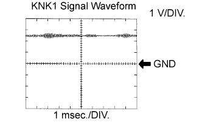
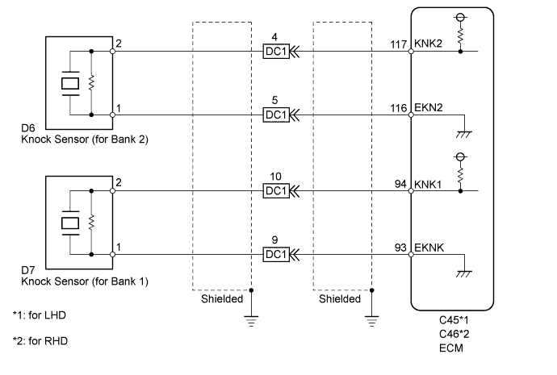
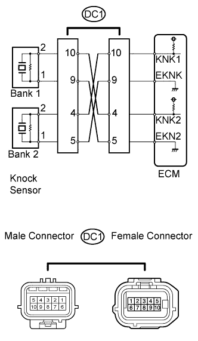
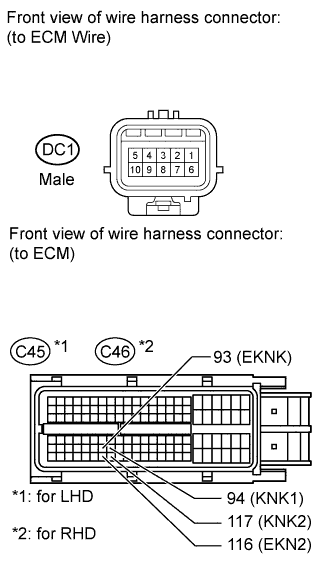
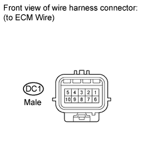
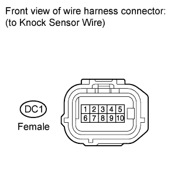
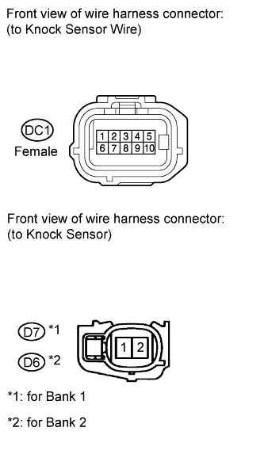

DTC P0327 Knock Sensor 1 Circuit Low Input (Bank 1 or Single Sensor) |
DTC P0328 Knock Sensor 1 Circuit High Input (Bank 1 or Single Sensor) |
DTC P0332 Knock Sensor 2 Circuit Low Input (Bank 2) |
DTC P0333 Knock Sensor 2 Circuit High Input (Bank 2) |
| DTC Code | DTC Detection Condition | Trouble Area |
| P0327 P0332 | The output voltage of the knock sensor is below 0.5 V (1 trip detection logic). |
|
| P0328 P0333 | The output voltage of the knock sensor is higher than 4.5 V (1 trip detection logic). |
|

| Item | Content |
| Terminal | KNK1 - EKNK KNK2 - EKN2 |
| Equipment Setting | 1 V/DIV. 1 msec./DIV. |
| Condition | Keep engine speed at 4000 rpm with warm engine |

| 1.READ DTC OUTPUT (CHECK KNOCK SENSOR CIRCUIT) |
 |
Disconnect the DC1 connector.
Using lead wires, connect the connectors as follows:
| Male Connector - Female Connector |
| Terminal 10 - Terminal 4 |
| Terminal 9 - Terminal 5 |
| Terminal 4 - Terminal 10 |
| Terminal 5 - Terminal 9 |
Connect the intelligent tester to the DLC3.
Turn the engine switch on (IG) and turn the tester on.
Clear DTCs (Click here).
Warm up the engine.
Run the engine at 3000 rpm for 10 seconds or more.
Enter the following menus: Powertrain / Engine and ECT / DTC.
Read the DTCs.
| Display | Proceed to |
| DTC is same as when vehicle brought in (for example, P0327 and P0328 are output again, or P0332 and P0333 are output again) | A |
| DTC is different from when vehicle brought in (for example, P0327 and P0328 are output at first, but then P0332 and P0333 are output, or vice versa) | B |
|
| ||||
| A | |
| 2.CHECK HARNESS AND CONNECTOR (CONNECTOR - ECM) |
 |
Disconnect the DC1 connector.
Disconnect the ECM connector.
Measure the resistance according to the value(s) in the table below.
| Tester Connection | Condition | Specified Condition |
| DC1 male connector 10 - C45-94 (KNK1) | Always | Below 1 Ω |
| DC1 male connector 9 - C45-93 (EKNK) | Always | Below 1 Ω |
| DC1 male connector 4 - C45-117 (KNK2) | Always | Below 1 Ω |
| DC1 male connector 5 - C45-116 (EKN2) | Always | Below 1 Ω |
| DC1 male connector 10 or C45-94 (KNK1) - Body ground | Always | 10 kΩ or higher |
| DC1 male connector 9 or C45-93 (EKNK) - Body ground | Always | 10 kΩ or higher |
| DC1 male connector 4 or C45-117 (KNK2) - Body ground | Always | 10 kΩ or higher |
| DC1 male connector 5 or C45-116 (EKN2) - Body ground | Always | 10 kΩ or higher |
| Tester Connection | Condition | Specified Condition |
| DC1 male connector 10 - C46-94 (KNK1) | Always | Below 1 Ω |
| DC1 male connector 9 - C46-93 (EKNK) | Always | Below 1 Ω |
| DC1 male connector 4 - C46-117 (KNK2) | Always | Below 1 Ω |
| DC1 male connector 5 - C46-116 (EKN2) | Always | Below 1 Ω |
| DC1 male connector 10 or C46-94 (KNK1) - Body ground | Always | 10 kΩ or higher |
| DC1 male connector 9 or C46-93 (EKNK) - Body ground | Always | 10 kΩ or higher |
| DC1 male connector 4 or C46-117 (KNK2) - Body ground | Always | 10 kΩ or higher |
| DC1 male connector 5 or C46-116 (EKN2) - Body ground | Always | 10 kΩ or higher |
|
| ||||
| OK | |
| 3.INSPECT ECM (VOLTAGE) |
 |
Disconnect the DC1 connector.
Measure the voltage according to the value(s) in the table below.
| Tester Connection | Switch Condition | Specified Condition |
| DC1 male connector 10 - 9 | Engine switch on (IG) | 4.5 to 5.5 V |
| DC1 male connector 4 - 5 | Engine switch on (IG) | 4.5 to 5.5 V |
|
| ||||
| OK | ||
| ||
| 4.INSPECT KNOCK CONTROL SENSOR |
 |
Disconnect the DC1 connector.
Measure the resistance according to the value(s) in the table below.
| Tester Connection | Condition | Specified Condition |
| DC1 female connector 10 - 9 | 20°C (68°F) | 120 to 280 kΩ |
| DC1 female connector 4 - 5 | 20°C (68°F) | 120 to 280 kΩ |
| Result | Proceed to |
| NG | A |
| OK | B |
|
| ||||
| A | |
| 5.CHECK HARNESS AND CONNECTOR (CONNECTOR - KNOCK SENSOR) |
 |
Disconnect the DC1 connector.
Disconnect the knock sensor connector.
Measure the resistance according to the value(s) in the table below.
| Tester Connection | Condition | Specified Condition |
| DC1 female connector 10 - D7-2 | Always | Below 1 Ω |
| DC1 female connector 9 - D7-1 | Always | Below 1 Ω |
| DC1 female connector 4 - D6-2 | Always | Below 1 Ω |
| DC1 female connector 5 - D6-1 | Always | Below 1 Ω |
| DC1 female connector 10 or D7-2 - Body ground | Always | 10 kΩ or higher |
| DC1 female connector 9 or D7-1 - Body ground | Always | 10 kΩ or higher |
| DC1 female connector 4 or D6-2 - Body ground | Always | 10 kΩ or higher |
| DC1 female connector 5 or D6-1 - Body ground | Always | 10 kΩ or higher |
|
| ||||
| OK | ||
| ||